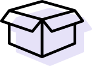

<div *ngIf="customSegments && user" class="c-segmentation-page">
  <div class="c-segmentation-page__header">
    <div class="c-segmentation-page__header__name">{{'header.my-segmentation' | translate}}</div>
    <div #editBtn *ngIf="customSegments.coefficients.length && user.securityLevel === 0"
         class="c-segmentation-page__header__edit"
         [class.show]="customSegments?.coefficients?.length">
      <button class="c-common__button c-common__button--border tiny icon"
              routerLink="/personal-area/custom-segmentation/create-segmentation">
        {{'segmentation.edit' | translate}}</button>
    </div>
  </div>
  <div #matrixContainer class="c-segmentation-page__container" [class.show]="customSegments?.coefficients?.length">
    <div class="c-segmentation-page__container__no-segmentation">
      <div *ngIf="!customSegments.coefficients.length; else matrix"
           class="c-segmentation-page__container__no-segmentation__container">
        <div></div>
        <div *ngIf="!customSegments.segments.length && !customSegments.questions.length; else continueCreationText"
             class="c-segmentation-page__container__no-segmentation__container__text">
          <div *ngIf="user.securityLevel === 0; else noSegmentationText">
            {{'segmentation.no-segmentation-text' | translate}}
          </div>
          <ng-template #noSegmentationText>
            <div class="c-segmentation-page__container__no-segmentation__container__text">
              {{'segmentation.no-segmentation-text-admin' | translate}}</div>
          </ng-template>
        </div>
        <ng-template #continueCreationText>
          <div *ngIf="user.securityLevel === 0; else continueText"
               class="c-segmentation-page__container__no-segmentation__container__text">
            {{'segmentation.continue-text' | translate}}</div>
          <ng-template #continueText>
            <div class="c-segmentation-page__container__no-segmentation__container__text">
              {{'segmentation.continue-text-admin' | translate}}</div>
          </ng-template>
        </ng-template>
        <div
          *ngIf="!customSegments.segments.length && !customSegments.questions.length && user.securityLevel === 0; else continueCreation"
          class="c-segmentation-page__container__no-segmentation__container__btn">
          <button
            routerLink="/personal-area/custom-segmentation/create-segmentation"
            class="c-common__button c-common__button--filled">{{'segmentation.create-btn' | translate}}</button>
        </div>
        <ng-template #continueCreation>
          <div *ngIf="user.securityLevel === 0" class="c-segmentation-page__container__no-segmentation__container__btn">
            <button
              routerLink="/personal-area/custom-segmentation/create-segmentation"
              class="c-common__button c-common__button--filled">{{'segmentation.continue-create-btn' | translate}}</button>
          </div>
        </ng-template>
      </div>
      <ng-template #matrix>
        <app-create-matrix
          viewOnly="true"
          [customSegments]="customSegments"
        ></app-create-matrix>
      </ng-template>
    </div>
  </div>
</div>
<div class="mobile">
  <app-desktop-alert *ngIf="isAlertExist && customSegments?.coefficients?.length"
                     (closeAlert)="closeAlert()"></app-desktop-alert>
</div>


